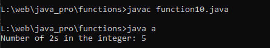

Write a Java method to count the number of digits in an integer with the value 2. The integer may be assumed to be non-negative.
Code:-
class a {
public static void main(String[] args) {
int number =202892202;
int count = countTwos(number);
System.out.println("Number of 2s in the integer: " + count);
}
public static int countTwos(int number) {
int count = 0;
String numberStr = String.valueOf(number);
for (int i = 0; i < numberStr.length(); i++) {
if (numberStr.charAt(i) == '2') {
count++;
}
}
return count;
}
}
Output:-
